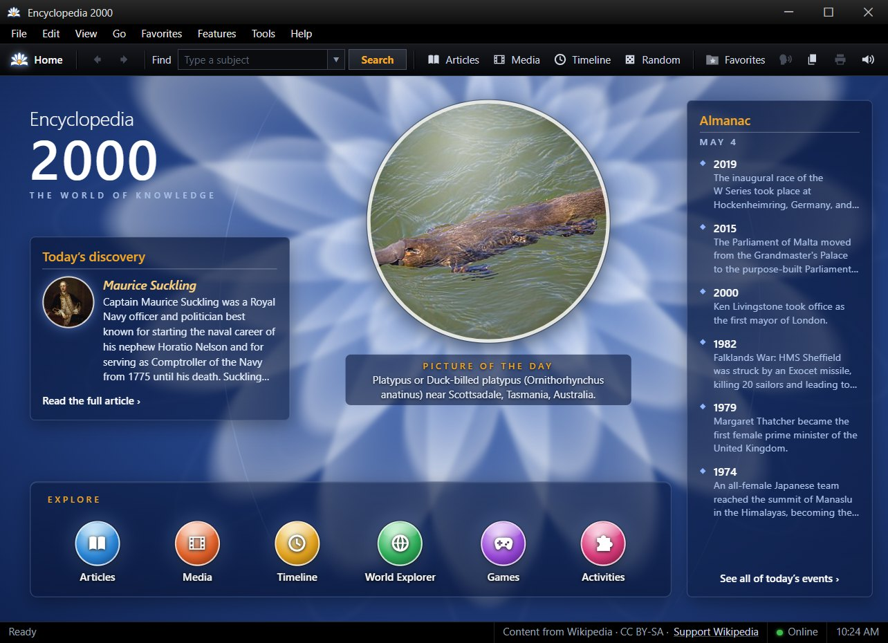
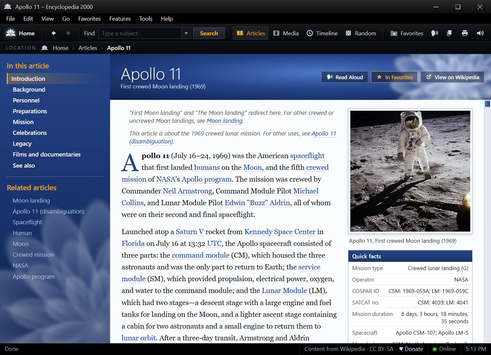
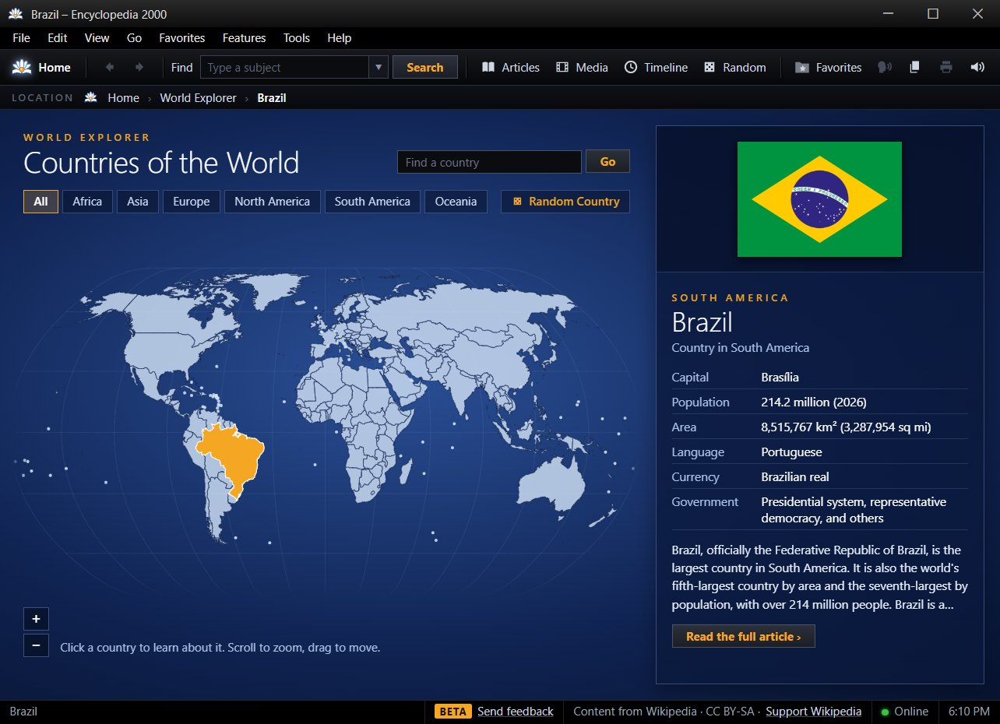
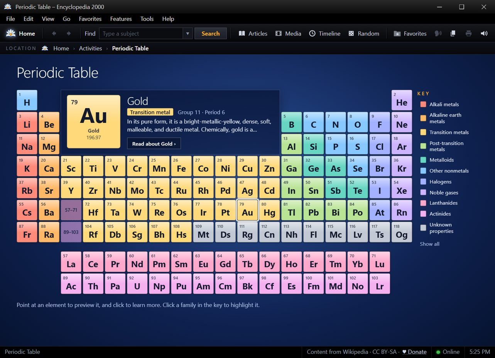
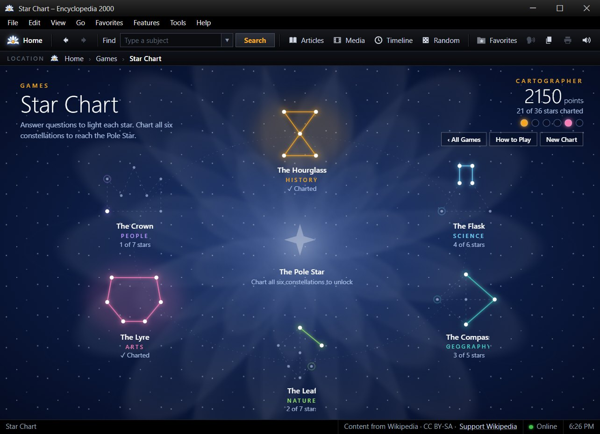
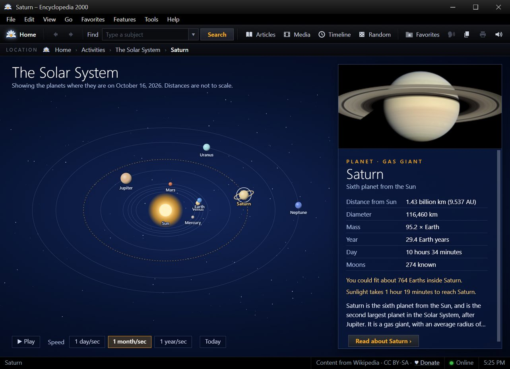
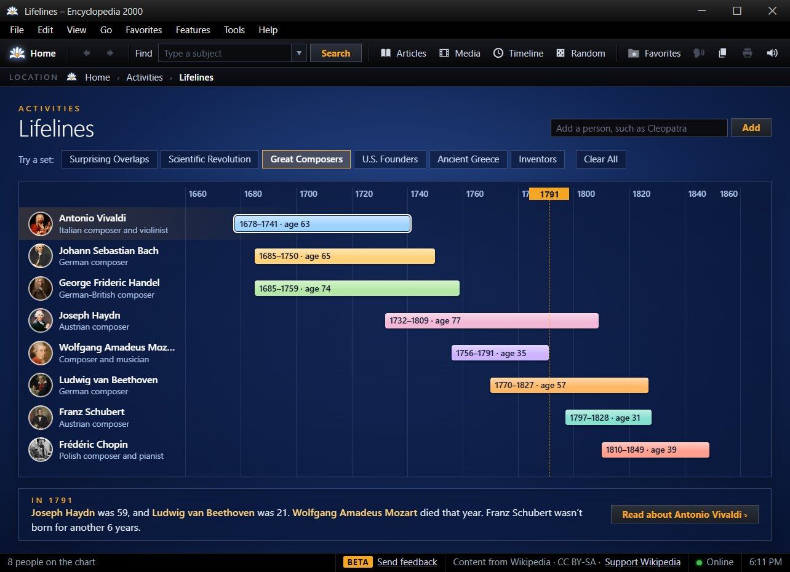
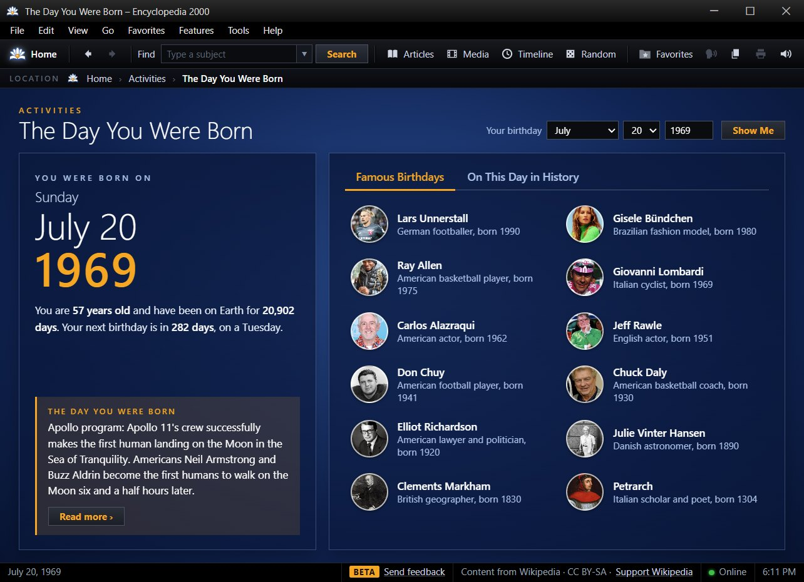
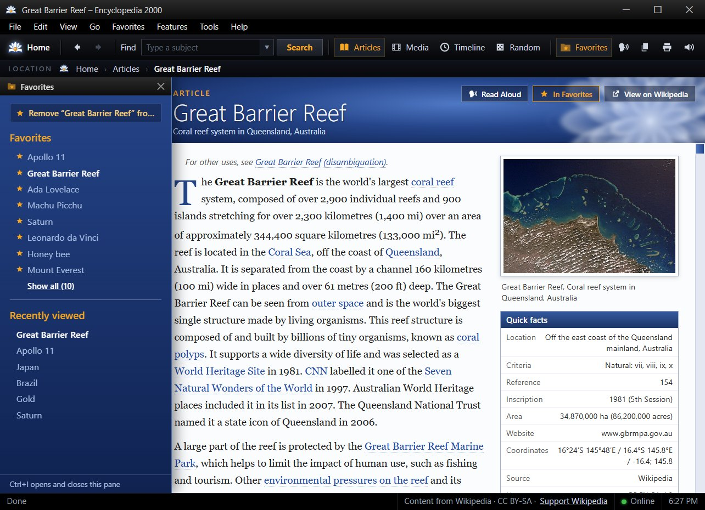
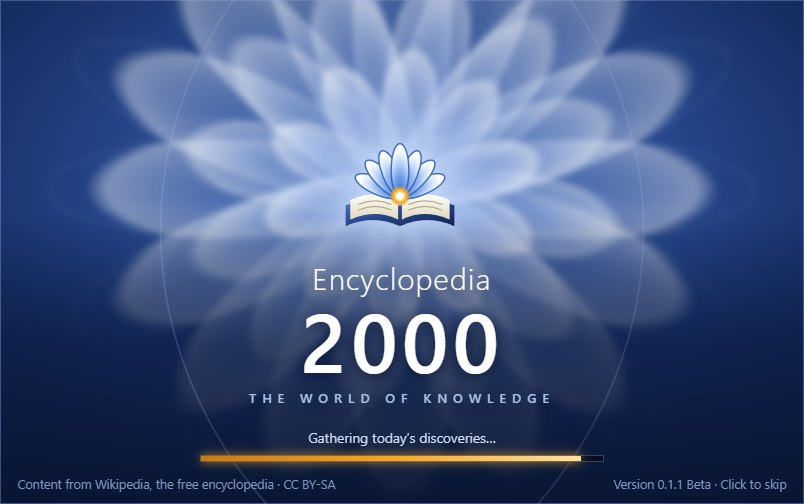

Press kit
Encyclopedia 2000 press kit
Everything you need to write about or feature Encyclopedia 2000. You're welcome to use these images and descriptions in articles and videos about the app.
In one sentence
Encyclopedia 2000 is a free desktop encyclopedia for Windows, inspired by the CD-ROM reference software of the early 2000s and powered by today's Wikipedia.
In a paragraph
Encyclopedia 2000 brings back the feel of early-2000s CD-ROM encyclopedias, with a startup jingle, a glossy home screen, and a Picture of the Day, but fills them with the whole of today's Wikipedia, live. Beyond articles, it includes World Explorer (a clickable map of 237 countries), interactive activities like the Periodic Table, The Solar System, Lifelines, and The Day You Were Born, and Star Chart, a trivia game with questions drawn from the encyclopedia. It's free and open source, with no ads, accounts, or tracking, and it's made by one independent developer.
Facts
| Developer | Scott Burton, independent developer (Texas, USA) |
|---|---|
| Platform | Windows 10 and 11 (64-bit). macOS and Linux are planned. |
| Current version | 0.1.1 Beta (first public release October 2026) |
| Price | Free. No ads, in-app purchases, accounts, or tracking. |
| Content | Live from Wikipedia, Wikimedia Commons, and Wikidata (CC BY-SA and CC0) |
| Source code | github.com/sburton0/encyclopedia-2000 (MIT License) |
| Website | encyclopedia2000.com |
| Built with | Electron, developed with the help of an AI coding assistant |
Logo
The Book in Bloom icon. Please don't change its colors or proportions.


Screenshots
Click a screenshot for the full-size image (1283 × 930).


Home screen

An article (Apollo 11)

World Explorer

Periodic Table

Star Chart

The Solar System

Lifelines

The Day You Were Born

Favorites pane

Startup screenContact
For interviews, questions, or early looks at upcoming versions, reach out on the Discord or through the contact form.
Please note
Encyclopedia 2000 is an independent project. It isn't affiliated with or endorsed by the Wikimedia Foundation or Microsoft. "Wikipedia" is a trademark of the Wikimedia Foundation; "Encarta" is a trademark of Microsoft.